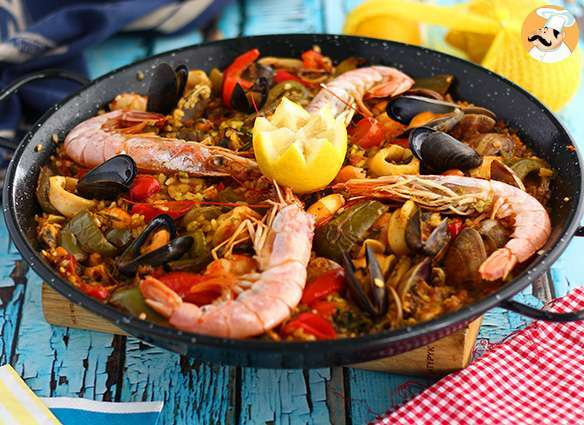
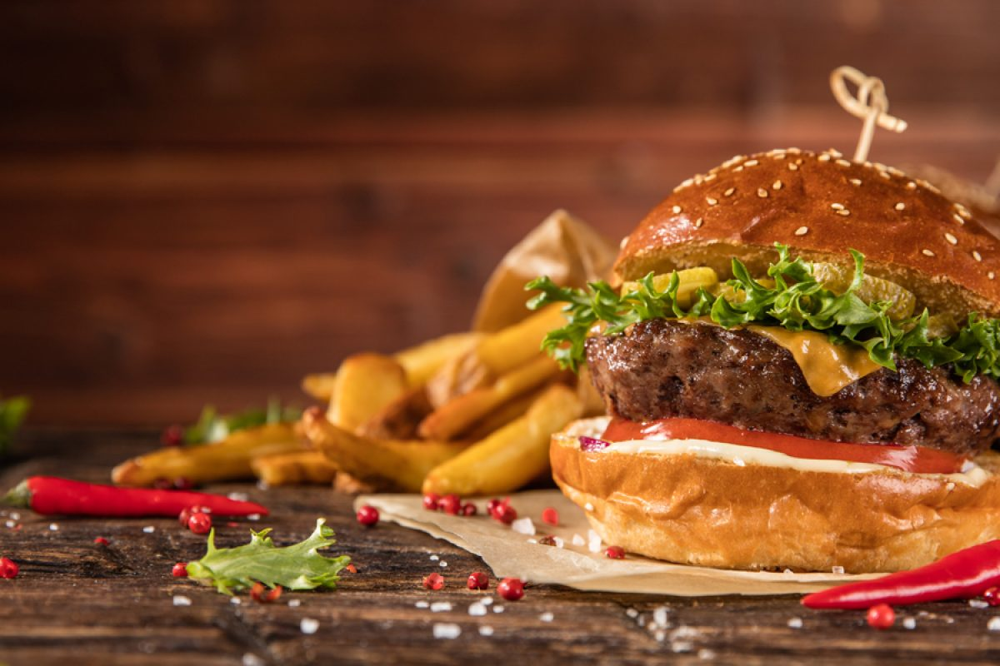

Paella.España
Está clarísimo que la lista podría ser interminable pero, si hay un plato que debes probar si viajas a España, es la paella.
Con arroz, mariscos y conejo, esta delicia tiene su origen en la Comunitat Valènciana, pero hay ahora muchísimas variedades que, por supuesto, te recomendamos probar.

Pizza. Italia
Si hay un plato internacional que podemos encontrar en prácticamente todo el mundo es la pizza. De origen italiano y elaborada con una base de harina, sal, agua y levadura que se cubre de tomate e ingredientes varios, es uno de los platos que no puedes dejar de degustar en este país.
Porque, aunque haya una pizzería en cada esquina de tu barrio, ¡en ningún lado sabe como en Italia!
Hamburguesa. Nueva york
Aunque en cualquier rincón de Estados Unidos encontraríamos miles de opciones y recomendaciones, Nueva York es una de las ciudades con más oferta y demanda de uno de sus platos más solicitados: las hamburguesas.

Sushi. Japón
Pese a que inicialmente puedas pensar que el pescado crudo no es lo tuyo, ir a Japón y no disfrutar de este plato de su gastronomía, es como no haber viajado hasta aquí…